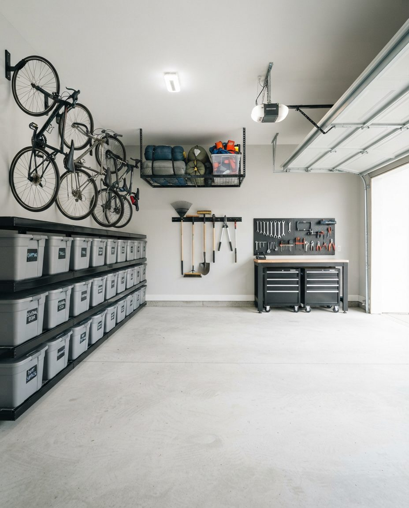

Same-day jobs come from a short list of situations. The movers arrived and refused the propane tank, the paint and the old fridge. The possession date is tomorrow and nobody remembered the garage. A landlord's move-out inspection is at four. A contractor needs the bay empty by morning. Or the forecast says minus 25 and the car has been parked outside since August.
Whichever one it is, the fastest start is a text to (587) 804-9266 with three photos: the garage from the driveway with the door up, the back wall, and anything heavy or awkward (a chest freezer, a workbench, a hot tub cover, a piano someone put out there in 2009). Tell us the address and the deadline. We answer texts in the evening too, so if tomorrow is the day, send them tonight.
What Decides Whether We Can Come Today
A free truck is only part of it. The rest depends on what's in your garage and what day it is, and you can judge most of that from where you're standing.
| Situation | Same day? | Why |
|---|---|---|
| Weekday, photos in before noon, ordinary household junk | Usually | Time to quote, load and reach a landfill scale before it closes at 5 p.m. |
| Weekday, call after 2 p.m. | Sometimes we can load today and dump tomorrow | The truck can't reach the scale in time, so the load waits overnight in our truck instead of your garage. |
| Saturday | Only with an early call | We work 9 to 4 on Saturdays, and the landfills don't reopen until Monday. |
| Sunday | Emergency calls only | All three City landfills are closed every Sunday. |
| Garage packed floor to rafters | Possibly split over two days | Volume takes more than one landfill trip, and the scale closes at 5. |
| Paint, fuel, chemicals | Yes, set aside | They go to a fire station drop-off, not the landfill. Stations are open 8 a.m. to 6 p.m. daily. |
| Fridge or freezer | Yes | Charged separately at the landfill whether the refrigerant has been removed or not. |
| A lot of keep-or-toss decisions still to make | Hard | The crew waits while you decide. That's the job that slips to tomorrow. |
| Glare ice on the driveway | After it's sanded | We won't carry a freezer down a glazed slope. |
Landfill hours and Sunday closures are from the City of Calgary's landfill locations and hours page, read November 7, 2026. Our hours are Monday to Friday 8 to 6 and Saturday 9 to 4.
A Same-Day Job Against the Clock
Here's how a weekday same-day cleanout fits around the two clocks that matter in Calgary: the landfill scale, which closes at 5 p.m. Monday to Saturday, and daylight. In November and December the sun is down before 5, and loading a truck in a dark driveway is slow and easy to get wrong.
- Before noon: photos and a price. You text or email the photos. We reply with a quote and an arrival window. Nothing is booked until you agree to the price.
- On arrival: a walk-through with whoever decides. Five minutes in the driveway or on a video call. We confirm what stays, what's being donated, and what's hazardous.
- Hazardous items first. Paint, fuel and chemicals come out and go to one side so they can't end up in the garbage load. That protects you from a surcharge or a rejected load at the scale.
- Load from the door inward. The crew works from the front of the garage to the back wall, then the rafters and any ceiling storage.
- Tarp and go. The City requires every load to be tarped and secured. An untarped load can be surcharged or turned away at the gate.
- Sweep and photos. The floor gets a dry sweep. Under the Stage 4 water restrictions that started November 4, 2026, nobody in Calgary is allowed to wash a driveway, so there's no floor wash until the City lifts them. We send photos of the empty garage if you're not there.

Saturday, Sunday and Holidays
Weekend deadlines catch people out because the landfill schedule and ours don't line up with the moving truck.
- Saturday: We work 9 to 4, and the landfills are open until 5. A Saturday job can be done if the call comes Friday night or first thing Saturday.
- Sunday: We take emergency calls only, and East Calgary, Shepard and Spyhill are all closed. If you're moving out on a Sunday, book the garage for Friday.
- Remembrance Day and Boxing Day: The City lists all three landfills as open on November 11. On December 26, East Calgary and Spyhill are open and Shepard's residential side is open.
- Christmas Day and New Year's Day: Every City landfill is closed.
Holiday dates are from the City's 2026 landfill holiday schedule. If a possession date falls on a long weekend, our page on clearing the garage before you sell covers how to split the work so the last sweep happens before the keys change hands.
What Leaves on a Different Truck
Movers refuse the same few things every time, and those are often the reason someone calls us the same afternoon. Here's what happens to each of them on a rushed job.
| Item | Where it goes | Same day? |
|---|---|---|
| Paint, stain, solvents, fuel, pesticides, pool chemicals | City household hazardous waste drop-off at a fire station, free for residents. Original labelled containers, never mixed. | Yes, stations are open 8 a.m. to 6 p.m. every day |
| Propane cylinders under 30 lb (barbecue and camping) | Free at a fire station drop-off, kept out of the garbage load. Vehicle propane tanks go to a metal recycler instead | Yes, before 5 p.m. (propane has shorter drop-off hours than other chemicals) |
| Fridge, freezer, dehumidifier, air conditioner | Landfill, $17 per item plus weight under the City's 2026 rates | Yes |
| Tires | Free residential drop-off, if they arrive separately from garbage | Yes |
| Usable furniture, tools, bikes | Donation, if it's clean and you want that | Sometimes. Donation drop-offs keep their own hours, so on a tight day usable items may go to the landfill unless you'd rather they wait |
| Firearms and ammunition | We stop and tell you. You call the Calgary Police Service non-emergency line, 403-266-1234 | Not by us |
| Anything you might want to keep | A set-aside pile, photographed, never loaded without your yes | Stays with you |
The reason hazardous items come out first: under the City's landfill rules, a load that mixes charged and free items is billed as one load, and a load with prohibited or hazardous material can be surcharged or refused. One leaking jerry can in the wrong pile turns a $25 run into a problem. Full rates are on the City's landfill rates page.
The Hour Before We Arrive
A same-day crew can't wait out a long morning of decisions. If you have an hour before we get there, this list is how to spend it.
- Get the cars out of the garage and off the driveway. The truck needs to back up close.
- Put anything you're keeping inside the house or mark it with painter's tape. A mark on a box beats a verbal "not that one" across a busy garage.
- Look for paperwork, keys, passports and cash in the boxes nearest the door to the house. That's where people drop things in a rush.
- Gather paint cans, fuel and chemicals in one corner if you can do it safely. Don't pour anything together.
- Shovel and sand the driveway and the path to the side door. Ice is the one thing that will make us stop.
- If the garage door opener has failed, find the manual release cord. In a cold snap, openers stop more often than people expect.
- If you won't be home, text us the door code and a phone number for whoever can make keep-or-toss calls.

When the Deadline Is a Bylaw Complaint
Sometimes the clock isn't a move. It's a neighbour. When a garage fills up, the overflow goes beside it: an old couch on the parking pad, a broken freezer next to the lane, boxes stacked against the fence. Calgary's Community Standards Bylaw doesn't care that it was meant to be temporary.
According to the City's untidy properties page, household items, furniture, garbage, appliances and machinery or vehicle parts must be stored so they can't be seen from outside the property. A fridge or freezer stored outside has to be locked or have its door taken off, and has to be out of view. Fines run from $100 to $500 depending on the violation. Complaints come through 311, and the City doesn't accept anonymous ones.
If you've had a visit or a notice, send us a photo of what's outside along with the garage. We clear the outdoor pile first, so the part an officer can see is gone even if the inside takes longer. If the freezer outside still has its door on, take it off or lock it now.
How a Same-Day Price Is Set
We price from your photos and tell you the number before the truck leaves for your address. The things that move it (if you're still deciding between a bin, a junk truck and a full crew, our garage cleanout Calgary page compares all four):
- Volume. How much of the truck the garage fills, including what's in the rafters.
- Weight on the scale. Garbage over 250 kg is charged by the tonne at the landfill. Concrete, tile and old exercise equipment are heavy for their size.
- Refrigerant appliances. Each fridge, freezer or air conditioner carries its own landfill fee.
- The carry. A front-drive double garage is a short walk. A detached garage off a back lane with a narrow gate, or stairs down to a walk-out, takes longer.
- How much is decided before we arrive. A garage with a marked keep pile is faster than one where every box needs a conversation.
We carry $2 million in liability insurance, and the quote covers the loading, the disposal runs and the sweep. If the garage needs more than hauling, our pages on estate garage cleanouts, hoarding garage cleanup and post-renovation cleanup explain how those jobs run. They usually need more than one day.
Questions People Ask When It Has to Be Today
How long does it take to clean out a garage?
The loading is usually the short part. What sets the length of a same-day job is the sorting (what you keep, what's donated, what's hazardous) and the drive to a landfill that closes its scale at 5 p.m. That's why we need the call or photos before noon: a morning booking leaves time to load, sort and reach the scale. A garage packed to the rafters, or one with a lot of decisions in it, may be split across two days.
How do I clean out a garage fast?
Decide what stays before anyone starts lifting. Tape or mark every keep item, or move it into the house, and get the cars out of the driveway. Pull paint, fuel and chemicals into one corner, because they can't ride in the truck with garbage. Then hand the rest over in one go rather than sorting box by box with the crew waiting.
How much does it cost to remove junk from a garage in Calgary?
We quote from photos, so the price is set before we load anything. What moves it is the volume, how much of it ends up on a paid landfill scale, refrigerant appliances, and how far the carry is from the garage to the truck. The City's own 2026 landfill rates set the floor for the disposal part: $25 flat for a load under 250 kg, $113 a tonne for garbage above that, and $17 for each fridge, freezer or air conditioner plus its weight.
What is the minimum charge for junk removal in Calgary?
At the City landfill the smallest load costs $25 if it's under 250 kg. Our own price for a same-day job comes from your photos, and we give it to you before we book the truck. If you only have a few bags and no truck is needed, the black cart or a single landfill run will be cheaper than hiring anyone, and we'll say so.
Can you clean out a garage on a Sunday in Calgary?
Sunday is for emergency calls only, and the City's East Calgary, Shepard and Spyhill landfills are all closed on Sundays. A Sunday job can be loaded, but the load can't be dumped until Monday morning. If a Sunday possession or move-out is the deadline, book Friday or Saturday instead.
What won't you take on a same-day garage cleanout?
Paint, solvents, fuel, propane and other household chemicals don't go in the truck with garbage. We set them aside, in their original containers, for a City household hazardous waste drop-off at a fire station, open 8 a.m. to 6 p.m. every day (propane only until 5). We don't touch firearms or ammunition. Fridges and freezers can go the same day but are charged separately at the landfill.
Do I need to be home for a same-day garage cleanout?
Someone needs to tell us what stays. That can be you in the driveway, or a video call and a marked keep pile if you're at work. With a door code we can do the rest without you and send photos of the empty garage when we leave.
Not in a rush? Our main Calgary garage cleanout page covers booked jobs, and garage decluttering is the slower, sort-everything version. For the floor once the restrictions lift, see garage floor cleaning.